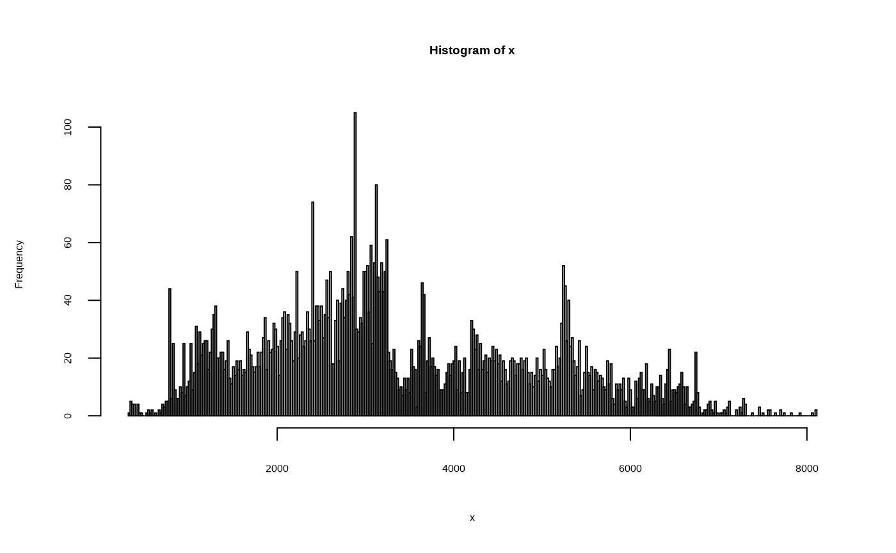

Do a random t-test to the cross-validation results
rand.t.test.w(cvoutput, n.perm = 999)
| cvoutput | |
|---|---|
| n.perm | the number of permutation times to get the p value, which assesses whether using the current number of components is significantly different from using one less. |
a matrix of the statistics of the cross-validation results
# Load modern pollen data modern_pollen <- read.csv(system.file("extdata", "Modern_Pollen_gdd_alpha_Tmin.csv", package = "fxTWAPLS", mustWork = TRUE)) # Extract taxa taxaColMin <- which(colnames(modern_pollen) == "Abies") taxaColMax <- which(colnames(modern_pollen) == "Zygophyllaceae") taxa <- modern_pollen[, taxaColMin:taxaColMax] # Get the frequency of each climate variable fx fx_Tmin <- fxTWAPLS::fx(modern_pollen$Tmin, bin = 0.02)# MTCO ## fx fit_Tmin <- fxTWAPLS::WAPLS.w(taxa, modern_pollen$Tmin, nPLS = 5) ## LOOCV test_mode <- TRUE # It should be set to FALSE before running ### without fx cv_Tmin <- fxTWAPLS::cv.w(taxa, modern_pollen$Tmin, nPLS = 5, fxTWAPLS::WAPLS.w, fxTWAPLS::WAPLS.predict.w, cpus = 2, # Remove the following line test_mode = test_mode) ### with fx cv_f_Tmin <- fxTWAPLS::cv.w(taxa, modern_pollen$Tmin, nPLS = 5, fxTWAPLS::WAPLS.w, fxTWAPLS::WAPLS.predict.w, usefx = TRUE, fx = fx_Tmin, cpus = 2, # Remove the following line test_mode = test_mode) # \donttest{ ## Random t-test rand_Tmin <- fxTWAPLS::rand.t.test.w(cv_Tmin, n.perm = 999)#> R2 Avg.Bias Max.Bias Min.Bias RMSEP delta.RMSEP p #> [1,] 0.02270058 0.5876271 3.600532 0.18947044 1.821084 184.534763 0.899 #> [2,] 0.10682957 2.0861546 5.426599 0.09891245 2.801596 53.842208 0.909 #> [3,] 0.13567130 2.2539910 6.152408 0.11691500 3.109415 10.987268 0.783 #> [4,] 0.15254826 2.1434898 6.439916 0.45996367 3.182276 2.343242 0.620 #> [5,] 0.14940046 2.0516054 6.670425 0.53014195 3.255956 2.315303 0.680 #> Compre.b0 Compre.b1 Compre.b0.se Compre.b1.se #> [1,] -3.546948 -0.3547418 4.190512 1.343838 #> [2,] -3.397578 -0.7968092 4.147967 1.330195 #> [3,] -3.997941 -1.0485186 4.764651 1.527956 #> [4,] -4.683848 -1.2370570 5.249320 1.683383 #> [5,] -5.075511 -1.3352831 5.736136 1.839498rand_f_Tmin <- fxTWAPLS::rand.t.test.w(cv_f_Tmin, n.perm = 999)#> R2 Avg.Bias Max.Bias Min.Bias RMSEP delta.RMSEP p #> [1,] 0.02268676 -0.7281176 2.926985 0.17800567 2.188575 241.953180 0.914 #> [2,] 0.10663875 1.3758271 5.177210 0.20932131 2.518062 15.054898 0.628 #> [3,] 0.12648227 1.5913962 5.816623 0.37612642 2.804248 11.365323 0.918 #> [4,] 0.14882193 1.3739246 6.041572 0.08024372 2.887152 2.956364 0.673 #> [5,] 0.14899405 1.2833742 6.213522 0.22031227 2.972728 2.964036 0.847 #> Compre.b0 Compre.b1 Compre.b0.se Compre.b1.se #> [1,] -5.121798 -0.4396407 5.195029 1.665973 #> [2,] -4.496675 -0.9241941 4.815914 1.544396 #> [3,] -4.856533 -1.1127393 5.264704 1.688316 #> [4,] -5.766922 -1.3397821 5.768599 1.849909 #> [5,] -6.128197 -1.4284879 6.146359 1.971051# }